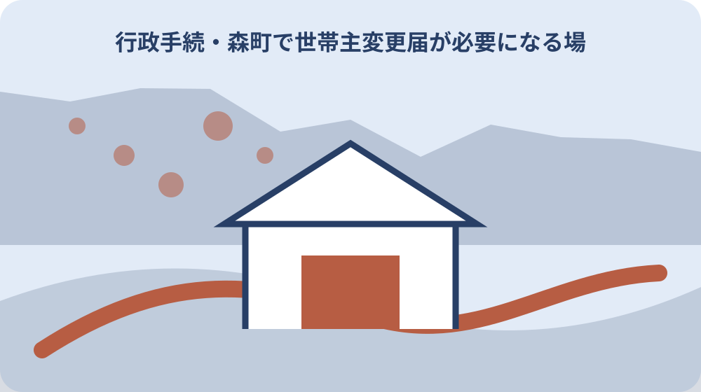

先に結論を確認する
この記事の答え：住所と世帯番号を最初に固定するため、対象者、基準日、公式資料、未確認事項を最初の一行へ置きます。
森町で最初に照合する条件：森町公式の内容が異なる二つの案内を2026-08-13に確認する
住所と世帯番号を最初に固定する
「住所と世帯番号を最初に固定する」の1段落では、住所と世帯番号を最初に固定するでは、世帯は同じ住所に住むことだけでなく生計を共にする単位として扱われます。「住所と世帯番号を最初に固定する」の1段落では、まず今回の対象者、基準日、手元資料を一件カードの同じ行に置きます。「住所と世帯番号を最初に固定する」の1段落では、森町で世帯主変更・世帯分離・世帯合併を一件ずつ判断するは制度名だけを写す記事ではなく、今回の一件がどの条件に当たるかを家族と窓口が追える形にするための手順です。
「住所と世帯番号を最初に固定する」の2段落では、住所と世帯番号を最初に固定するを進めるときは、公式案内の記載と家族が把握している事情を左右に分けます。「住所と世帯番号を最初に固定する」の2段落では、根拠として確認できるのは「世帯は同じ住所に住むことだけでなく生計を共にする単位として扱われます」までです。「住所と世帯番号を最初に固定する」の2段落では、資料にない個別判断は未確認欄へ残し、都合のよい結論で埋めません。
「住所と世帯番号を最初に固定する」の3段落では、住所と世帯番号を最初に固定するに使う書類には、発行元、発行日、対象者、番号の種類を付記します。「住所と世帯番号を最初に固定する」の3段落では、次の「世帯主変更だけの案件を分ける」へ渡す項目だけを選び、原本、写し、画面保存を同じ証拠として扱わないことが、後日のやり直しを減らします。
「住所と世帯番号を最初に固定する」の4段落では、住所と世帯番号を最初に固定するの窓口質問は、現在の状態、確認した公式資料、知りたい一点の順に短くします。「住所と世帯番号を最初に固定する」の4段落では、回答を受けたら担当部署、回答日、再確認が必要な条件を追記し、口頭回答だけで完了印を付けないようにします。
「住所と世帯番号を最初に固定する」の5段落では、住所と世帯番号を最初に固定するを家族へ引き継ぐ時点では、確認済み、対象外、未確認の三欄をそろえます。「住所と世帯番号を最初に固定する」の5段落では、1番目の工程として「世帯は同じ住所に住むことだけでなく生計を共にする単位として扱われます」と今回の対象を結び、次に読む人が公的事実と私的な希望を取り違えない状態で保存してください。
世帯主変更だけの案件を分ける
「世帯主変更だけの案件を分ける」の1段落では、世帯主変更だけの案件を分けるでは、同一住所でも生活実態により別世帯となる場合があります。「世帯主変更だけの案件を分ける」の1段落では、まず今回の対象者、基準日、手元資料を引継ぎ表の同じ行に置きます。「世帯主変更だけの案件を分ける」の1段落では、森町で世帯主変更・世帯分離・世帯合併を一件ずつ判断するは制度名だけを写す記事ではなく、今回の一件がどの条件に当たるかを家族と窓口が追える形にするための手順です。
「世帯主変更だけの案件を分ける」の2段落では、世帯主変更だけの案件を分けるを進めるときは、公式案内の記載と家族が把握している事情を左右に分けます。「世帯主変更だけの案件を分ける」の2段落では、根拠として確認できるのは「同一住所でも生活実態により別世帯となる場合があります」までです。「世帯主変更だけの案件を分ける」の2段落では、資料にない個別判断は未確認欄へ残し、都合のよい結論で埋めません。
「世帯主変更だけの案件を分ける」の3段落では、世帯主変更だけの案件を分けるに使う書類には、発行元、発行日、対象者、番号の種類を付記します。「世帯主変更だけの案件を分ける」の3段落では、次の「世帯分離の目的と構成員を記す」へ渡す項目だけを選び、原本、写し、画面保存を同じ証拠として扱わないことが、後日のやり直しを減らします。
世帯分離の目的と構成員を記す
「世帯分離の目的と構成員を記す」の1段落では、世帯分離の目的と構成員を記すでは、世帯主変更、世帯分離、世帯合併は目的と変更後構成が異なります。「世帯分離の目的と構成員を記す」の1段落では、まず今回の対象者、基準日、手元資料を窓口メモの同じ行に置きます。「世帯分離の目的と構成員を記す」の1段落では、森町で世帯主変更・世帯分離・世帯合併を一件ずつ判断するは制度名だけを写す記事ではなく、今回の一件がどの条件に当たるかを家族と窓口が追える形にするための手順です。
「世帯分離の目的と構成員を記す」の2段落では、世帯分離の目的と構成員を記すを進めるときは、公式案内の記載と家族が把握している事情を左右に分けます。「世帯分離の目的と構成員を記す」の2段落では、根拠として確認できるのは「世帯主変更、世帯分離、世帯合併は目的と変更後構成が異なります」までです。「世帯分離の目的と構成員を記す」の2段落では、資料にない個別判断は未確認欄へ残し、都合のよい結論で埋めません。
「世帯分離の目的と構成員を記す」の3段落では、世帯分離の目的と構成員を記すに使う書類には、発行元、発行日、対象者、番号の種類を付記します。「世帯分離の目的と構成員を記す」の3段落では、次の「世帯合併後の世帯主を決める」へ渡す項目だけを選び、原本、写し、画面保存を同じ証拠として扱わないことが、後日のやり直しを減らします。

世帯合併後の世帯主を決める
「世帯合併後の世帯主を決める」の1段落では、世帯合併後の世帯主を決めるでは、森町の住民異動窓口は住民生活課住民係です。「世帯合併後の世帯主を決める」の1段落では、まず今回の対象者、基準日、手元資料を期限台帳の同じ行に置きます。「世帯合併後の世帯主を決める」の1段落では、森町で世帯主変更・世帯分離・世帯合併を一件ずつ判断するは制度名だけを写す記事ではなく、今回の一件がどの条件に当たるかを家族と窓口が追える形にするための手順です。
「世帯合併後の世帯主を決める」の2段落では、世帯合併後の世帯主を決めるを進めるときは、公式案内の記載と家族が把握している事情を左右に分けます。「世帯合併後の世帯主を決める」の2段落では、根拠として確認できるのは「森町の住民異動窓口は住民生活課住民係です」までです。「世帯合併後の世帯主を決める」の2段落では、資料にない個別判断は未確認欄へ残し、都合のよい結論で埋めません。
「世帯合併後の世帯主を決める」の3段落では、世帯合併後の世帯主を決めるに使う書類には、発行元、発行日、対象者、番号の種類を付記します。「世帯合併後の世帯主を決める」の3段落では、次の「同住所と同世帯を混同しない」へ渡す項目だけを選び、原本、写し、画面保存を同じ証拠として扱わないことが、後日のやり直しを減らします。
同住所と同世帯を混同しない
「同住所と同世帯を混同しない」の1段落では、同住所と同世帯を混同しないでは、住民異動の届出では届出人の本人確認書類を用意します。「同住所と同世帯を混同しない」の1段落では、まず今回の対象者、基準日、手元資料を資料束の同じ行に置きます。「同住所と同世帯を混同しない」の1段落では、森町で世帯主変更・世帯分離・世帯合併を一件ずつ判断するは制度名だけを写す記事ではなく、今回の一件がどの条件に当たるかを家族と窓口が追える形にするための手順です。
「同住所と同世帯を混同しない」の2段落では、同住所と同世帯を混同しないを進めるときは、公式案内の記載と家族が把握している事情を左右に分けます。「同住所と同世帯を混同しない」の2段落では、根拠として確認できるのは「住民異動の届出では届出人の本人確認書類を用意します」までです。「同住所と同世帯を混同しない」の2段落では、資料にない個別判断は未確認欄へ残し、都合のよい結論で埋めません。
「同住所と同世帯を混同しない」の3段落では、同住所と同世帯を混同しないに使う書類には、発行元、発行日、対象者、番号の種類を付記します。「同住所と同世帯を混同しない」の3段落では、次の「届出人と代理人を区別する」へ渡す項目だけを選び、原本、写し、画面保存を同じ証拠として扱わないことが、後日のやり直しを減らします。
届出人と代理人を区別する
「届出人と代理人を区別する」の1段落では、届出人と代理人を区別するでは、代理人が届ける場合は委任状など追加資料の確認が必要です。「届出人と代理人を区別する」の1段落では、まず今回の対象者、基準日、手元資料を判断表の同じ行に置きます。「届出人と代理人を区別する」の1段落では、森町で世帯主変更・世帯分離・世帯合併を一件ずつ判断するは制度名だけを写す記事ではなく、今回の一件がどの条件に当たるかを家族と窓口が追える形にするための手順です。
「届出人と代理人を区別する」の2段落では、届出人と代理人を区別するを進めるときは、公式案内の記載と家族が把握している事情を左右に分けます。「届出人と代理人を区別する」の2段落では、根拠として確認できるのは「代理人が届ける場合は委任状など追加資料の確認が必要です」までです。「届出人と代理人を区別する」の2段落では、資料にない個別判断は未確認欄へ残し、都合のよい結論で埋めません。
「届出人と代理人を区別する」の3段落では、届出人と代理人を区別するに使う書類には、発行元、発行日、対象者、番号の種類を付記します。「届出人と代理人を区別する」の3段落では、次の「変更日から届出日を管理する」へ渡す項目だけを選び、原本、写し、画面保存を同じ証拠として扱わないことが、後日のやり直しを減らします。
変更日から届出日を管理する
「変更日から届出日を管理する」の1段落では、変更日から届出日を管理するでは、世帯変更の日と窓口へ届けた日は別々に記録します。「変更日から届出日を管理する」の1段落では、まず今回の対象者、基準日、手元資料を照合票の同じ行に置きます。「変更日から届出日を管理する」の1段落では、森町で世帯主変更・世帯分離・世帯合併を一件ずつ判断するは制度名だけを写す記事ではなく、今回の一件がどの条件に当たるかを家族と窓口が追える形にするための手順です。
「変更日から届出日を管理する」の2段落では、変更日から届出日を管理するを進めるときは、公式案内の記載と家族が把握している事情を左右に分けます。「変更日から届出日を管理する」の2段落では、根拠として確認できるのは「世帯変更の日と窓口へ届けた日は別々に記録します」までです。「変更日から届出日を管理する」の2段落では、資料にない個別判断は未確認欄へ残し、都合のよい結論で埋めません。
「変更日から届出日を管理する」の3段落では、変更日から届出日を管理するに使う書類には、発行元、発行日、対象者、番号の種類を付記します。「変更日から届出日を管理する」の3段落では、次の「国保世帯への影響を別途確認する」へ渡す項目だけを選び、原本、写し、画面保存を同じ証拠として扱わないことが、後日のやり直しを減らします。
国保世帯への影響を別途確認する
「国保世帯への影響を別途確認する」の1段落では、国保世帯への影響を別途確認するでは、世帯構成の変更は国民健康保険など世帯単位の制度へ影響する場合があります。「国保世帯への影響を別途確認する」の1段落では、まず今回の対象者、基準日、手元資料を家族記録の同じ行に置きます。「国保世帯への影響を別途確認する」の1段落では、森町で世帯主変更・世帯分離・世帯合併を一件ずつ判断するは制度名だけを写す記事ではなく、今回の一件がどの条件に当たるかを家族と窓口が追える形にするための手順です。
「国保世帯への影響を別途確認する」の2段落では、国保世帯への影響を別途確認するを進めるときは、公式案内の記載と家族が把握している事情を左右に分けます。「国保世帯への影響を別途確認する」の2段落では、根拠として確認できるのは「世帯構成の変更は国民健康保険など世帯単位の制度へ影響する場合があります」までです。「国保世帯への影響を別途確認する」の2段落では、資料にない個別判断は未確認欄へ残し、都合のよい結論で埋めません。
「国保世帯への影響を別途確認する」の3段落では、国保世帯への影響を別途確認するに使う書類には、発行元、発行日、対象者、番号の種類を付記します。「国保世帯への影響を別途確認する」の3段落では、次の「証明書で変更後表示を確かめる」へ渡す項目だけを選び、原本、写し、画面保存を同じ証拠として扱わないことが、後日のやり直しを減らします。
証明書で変更後表示を確かめる
「証明書で変更後表示を確かめる」の1段落では、証明書で変更後表示を確かめるでは、変更後の住民票で世帯主と続柄の表示を確認できます。「証明書で変更後表示を確かめる」の1段落では、まず今回の対象者、基準日、手元資料を受付記録の同じ行に置きます。「証明書で変更後表示を確かめる」の1段落では、森町で世帯主変更・世帯分離・世帯合併を一件ずつ判断するは制度名だけを写す記事ではなく、今回の一件がどの条件に当たるかを家族と窓口が追える形にするための手順です。
「証明書で変更後表示を確かめる」の2段落では、証明書で変更後表示を確かめるを進めるときは、公式案内の記載と家族が把握している事情を左右に分けます。「証明書で変更後表示を確かめる」の2段落では、根拠として確認できるのは「変更後の住民票で世帯主と続柄の表示を確認できます」までです。「証明書で変更後表示を確かめる」の2段落では、資料にない個別判断は未確認欄へ残し、都合のよい結論で埋めません。
「証明書で変更後表示を確かめる」の3段落では、証明書で変更後表示を確かめるに使う書類には、発行元、発行日、対象者、番号の種類を付記します。「証明書で変更後表示を確かめる」の3段落では、次の「家族全員の続柄表示を確認する」へ渡す項目だけを選び、原本、写し、画面保存を同じ証拠として扱わないことが、後日のやり直しを減らします。
家族全員の続柄表示を確認する
「家族全員の続柄表示を確認する」の1段落では、家族全員の続柄表示を確認するでは、森町公式には戸籍届と住民異動届をまとめた案内があります。「家族全員の続柄表示を確認する」の1段落では、まず今回の対象者、基準日、手元資料を確認票の同じ行に置きます。「家族全員の続柄表示を確認する」の1段落では、森町で世帯主変更・世帯分離・世帯合併を一件ずつ判断するは制度名だけを写す記事ではなく、今回の一件がどの条件に当たるかを家族と窓口が追える形にするための手順です。
「家族全員の続柄表示を確認する」の2段落では、家族全員の続柄表示を確認するを進めるときは、公式案内の記載と家族が把握している事情を左右に分けます。「家族全員の続柄表示を確認する」の2段落では、根拠として確認できるのは「森町公式には戸籍届と住民異動届をまとめた案内があります」までです。「家族全員の続柄表示を確認する」の2段落では、資料にない個別判断は未確認欄へ残し、都合のよい結論で埋めません。
「家族全員の続柄表示を確認する」の3段落では、家族全員の続柄表示を確認するに使う書類には、発行元、発行日、対象者、番号の種類を付記します。「家族全員の続柄表示を確認する」の3段落では、次の「大石の視点：生活実態を先に言語化する」へ渡す項目だけを選び、原本、写し、画面保存を同じ証拠として扱わないことが、後日のやり直しを減らします。
大石の視点：生活実態を先に言語化する
「大石の視点：生活実態を先に言語化する」の1段落では、大石の視点：生活実態を先に言語化するでは、住民票の写しの請求方法は住民異動届とは別ページで案内されています。「大石の視点：生活実態を先に言語化する」の1段落では、まず今回の対象者、基準日、手元資料を一件カードの同じ行に置きます。「大石の視点：生活実態を先に言語化する」の1段落では、森町で世帯主変更・世帯分離・世帯合併を一件ずつ判断するは制度名だけを写す記事ではなく、今回の一件がどの条件に当たるかを家族と窓口が追える形にするための手順です。
「大石の視点：生活実態を先に言語化する」の2段落では、大石の視点：生活実態を先に言語化するを進めるときは、公式案内の記載と家族が把握している事情を左右に分けます。「大石の視点：生活実態を先に言語化する」の2段落では、根拠として確認できるのは「住民票の写しの請求方法は住民異動届とは別ページで案内されています」までです。「大石の視点：生活実態を先に言語化する」の2段落では、資料にない個別判断は未確認欄へ残し、都合のよい結論で埋めません。
「大石の視点：生活実態を先に言語化する」の3段落では、大石の視点：生活実態を先に言語化するに使う書類には、発行元、発行日、対象者、番号の種類を付記します。「大石の視点：生活実態を先に言語化する」の3段落では、次の「世帯変更の判断票を完成する」へ渡す項目だけを選び、原本、写し、画面保存を同じ証拠として扱わないことが、後日のやり直しを減らします。
世帯変更の判断票を完成する
「世帯変更の判断票を完成する」の1段落では、世帯変更の判断票を完成するでは、世帯変更は税や扶養の認定を自動的に確定する手続ではありません。「世帯変更の判断票を完成する」の1段落では、まず今回の対象者、基準日、手元資料を引継ぎ表の同じ行に置きます。「世帯変更の判断票を完成する」の1段落では、森町で世帯主変更・世帯分離・世帯合併を一件ずつ判断するは制度名だけを写す記事ではなく、今回の一件がどの条件に当たるかを家族と窓口が追える形にするための手順です。
「世帯変更の判断票を完成する」の2段落では、世帯変更の判断票を完成するを進めるときは、公式案内の記載と家族が把握している事情を左右に分けます。「世帯変更の判断票を完成する」の2段落では、根拠として確認できるのは「世帯変更は税や扶養の認定を自動的に確定する手続ではありません」までです。「世帯変更の判断票を完成する」の2段落では、資料にない個別判断は未確認欄へ残し、都合のよい結論で埋めません。
「世帯変更の判断票を完成する」の3段落では、世帯変更の判断票を完成するに使う書類には、発行元、発行日、対象者、番号の種類を付記します。「世帯変更の判断票を完成する」の3段落では、次の「住所と世帯番号を最初に固定する」へ渡す項目だけを選び、原本、写し、画面保存を同じ証拠として扱わないことが、後日のやり直しを減らします。